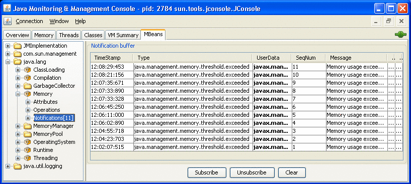

전의 항목
전의 항목
JConsole 의 사용
JConsole 그래피컬 사용자 인터페이스는, Java Management Extensions (JMX) 스펙에 준거한 감시 툴입니다. Java 가상 머신 (Java VM)의 광범위한 Instrumentation을 사용해, Java 플랫폼에서 실행되는 어플리케이션의 퍼포먼스와 자원 소비에 관한 정보를 제공합니다.
Java Platform, Standard Edition (Java SE 플랫폼) 6 에서는 JConsole 가 업데이트 되어 Windows 및 GNOME 데스크탑의 Look & Feel (다른 플랫폼의 경우는 표준적인 Java 의 그래피컬 Look & Feel)를 제공합니다. 이 문서에 게재한 화면 capther-는, Windows XP 로 동작하는 인터페이스의 인스턴스로부터 취득되었습니다.
JConsole 의 기동
jconsole 실행 가능 파일은,JDK_HOME/bin 에 있습니다. 여기서 JDK_HOME 는, JDK (Java Development Kit)가 인스톨 되고 있는 디렉토리입니다. 이 디렉토리가 시스템의 패스에 있으면, 커멘드 (쉘) prompt로 jconsole 라고 입력하는 것만으로, JConsole 를 기동할 수 있습니다. 그 이외의 경우는, 실행 가능 파일에의 풀 패스를 입력할 필요가 있습니다.
커멘드 구문
JConsole 를 사용하면, 로컬 어플리케이션 (JConsole 와 같은 시스템상에서 동작하는 어플리케이션)과 원격 어플리케이션 (다른 시스템상에서 동작하는 어플리케이션)의 양쪽 모두를 감시할 수 있습니다.
주 - JConsole 를 사용해 로컬 어플리케이션을 감시하는 것은, 개발이나 prototype 작성에는 편리합니다만, JConsole 자체가 상당한 system resource를 소비하기 위해(때문에), 열매 가동 환경에서 사용하는 것은 추천하지 않습니다. JConsole 어플리케이션을 감시 대상의 플랫폼으로부터 떼어내기 위해서(때문에), 원격 감시를 추천합니다.
jconsole 커멘드의 구문에 대한 자세한 것은,jconsole 커멘드의 메뉴얼 페이지「Java 감시 및 관리 콘솔」을 참조해 주세요.
로컬 감시의 설정
커멘드행으로 다음의 커멘드를 입력해 JConsole 를 기동합니다.
% jconsole |
JConsole 가 기동하면(자), JConsole 와 접속 가능해 로컬에 동작하는 모든 Java 어플리케이션이 선택사항으로서 표시됩니다.
특정의 어플리케이션을 감시하는 경우, 그 어플리케이션의 프로세스 ID 를 알고 있으면, JConsole 를 기동해, 그 어플리케이션과 접속시킬 수도 있습니다. 이 경우, 어플리케이션은 JConsole 와 같은 사용자 ID 로 실행할 필요가 있습니다. 특정 어플리케이션의 로컬 감시를 위해서(때문에) JConsole 를 기동하는 커멘드 구문은 다음과 같습니다.
% jconsole processID |
여기서,processID 는, 어플리케이션의 프로세스 ID (PID)입니다. 어플리케이션의 PID 를 조사하려면 , 다음의 순서를 실행합니다.
Unix 또는 Linux 시스템의 경우,ps 커멘드를 사용해, 실행중의 java 인스턴스의 PID 를 찾아냅니다.
Windows 시스템의 경우, 태스크 매니저-를 사용해,java 또는 javaw 의 PID 를 찾아냅니다.
jps 커멘드행 유틸리티를 사용해 PID 를 조사할 수도 있습니다. Java 가상 머신 프로세스 상태 툴의 메뉴얼 페이지를 참조해 주세요.
예를 들어,Notepad 어플리케이션의 프로세스 ID 가 2956 이라고 특정했을 경우는, 다음의 커멘드로 JConsole 를 기동합니다.
% jconsole 2956 |
JConsole 와 어플리케이션은 같은 사용자가 실행할 필요가 있습니다. 관리 및 감시 시스템은, operating system의 파일 액세스권을 사용합니다. 프로세스 ID 를 지정하지 않는 경우, JConsole 에 의해 로컬의 Java 어플리케이션이 모두 자동적으로 검출되어 감시하는 어플리케이션을 선택하기 위한 다이알로그 박스가 표시됩니다 (「JMX 에이전트에의 접속」을 참조).
자세한 것은,「로컬의 감시 및 관리」를 참조해 주세요.
원격 감시의 설정
원격 감시를 위해서(때문에) JConsole 를 기동하려면 , 다음의 커멘드 구문을 사용합니다.
% jconsole hostName:portNum |
여기서,hostName 는 어플리케이션을 실행하는 시스템의 이름,portNum 는, Java VM 를 기동해 JMX 에이전트를 유효하게 했을 때에 지정한 포트 번호입니다. 자세한 것은,「원격의 감시 및 관리」를 참조해 주세요.
호스트명 / 포트 번호의 편성을 지정하지 않는 경우, JConsole 에는, 호스트명과 포트 번호가 입력 가능한 접속 다이알로그 박스 (JMX 에이전트에의 접속)가 표시됩니다.
시큐리티가 보호된 원격 감시의 설정
Secure Sockets Layer (SSL)로 보호된 접속에 의해 감시를 실행하도록, JConsole 를 기동할 수도 있습니다. 접속의 시큐리티가 보호된 상태로 JConsole 를 기동하는 커멘드에 대해서는,제 2 장 「JMX 테크놀러지를 사용하는 감시와 관리」의「SSL 를 유효하게 한 JConsole 에 의한 원격 감시」로 설명합니다.
JMX 에이전트에의 접속
JConsole 를, 접속하는 JMX 에이전트를 지정하는 인수로 기동했을 경우, 지정한 Java VM 의 감시가 자동적으로 시작됩니다. 「접속」 | 「신규 접속」을 선택해, 필요한 정보를 입력하는 것으로, 언제라도 다른 호스트에게 접속할 수 있습니다.
JConsole 를 기동할 경우에 인수를 지정하지 않는 경우, 최초로 접속 다이알로그 박스가 표시됩니다. 이 다이알로그 박스로, 「로컬」과「원격」의 어디에서 접속하는지를 선택합니다.
Dynamic Attach
Java SE 플랫폼의 전회 릴리스에서는, JConsole 로 감시하는 어플리케이션을 기동하는 경우, 다음의 커멘드행 옵션을 사용할 필요가 있었습니다.
% -Dcom.sun.management.jmxremote |
그에 대해, Java SE 6 플랫폼 부속 버젼의 JConsole 는, Attach API 를 지원하는 어플리케이션이면 접속할 수 있습니다. 즉, Java SE 6 HotSpot VM 로 기동하는 어플리케이션은 JConsole 에 의해 자동적으로 검출되어 기동시에 앞에서 본 커멘드행 옵션을 사용할 필요는 없습니다.
JConsole 의 로컬 프로세스에의 접속
접속하는 JMX 에이전트를 설정하지 않고 JConsole 를 기동하면(자), 다음의 다이얼로그 윈도우가 표시됩니다.
그림 3-1 로컬 프로세스에의 접속의 작성
로컬 프로세스 옵션에는, 로컬 시스템상에서 JConsole 와 같은 사용자 ID 에 의해 동작하는 Java VM 와 그 프로세스 ID, 클래스나 인수의 정보가 일람표 나타납니다. JConsole 를 어플리케이션에 접속하려면 , 감시하는 어플리케이션을 선택해 「접속」버튼을 클릭합니다. 로컬 프로세스의 리스트에는, 다음의 타입의 Java VM 로 동작하는 어플리케이션이 포함됩니다.
관리 에이전트를 유효하게 한 어플리케이션. Java SE 6 플랫폼 또는 J2SE 5.0 플랫폼에서 동작하는 어플리케이션 가운데,-Dcom.sun.management.jmxremote 옵션을 사용해 기동한 것, 또는 -Dcom.sun.management.jmxremote.port 옵션을 지정해 기동한 것이 포함됩니다. 그 외 , Java SE 6 플랫폼에서 동작하는 어플리케이션 가운데, 기동시는 관리 프로퍼티을 지정하지 않고 나중에 JConsole 로 접속해, 실행시에 관리 에이전트를 유효하게 하는 것도 포함됩니다.
관리 에이전트를 무효로 한 접속 가능한 어플리케이션. 「접속 가능한」어플리케이션은, 실행시에 관리 에이전트의 로딩을 지원합니다. 접속 가능한 어플리케이션에는, Attach API 를 지원하는 Java SE 6 플랫폼상에서 기동하는 어플리케이션이 포함됩니다. 동적 접속을 지원하는 어플리케이션에서는, 관리 에이전트를 기동하는 경우, 커멘드행으로 com.sun.management.jmxremote 또는 com.sun.management.jmxremote.port 옵션을 지정할 필요는 없습니다. 또, 어플리케이션을 기동하기 전에, JConsole 를 관리 에이전트에 접속할 필요는 없습니다. 이 어플리케이션을 선택하면(자), 접속시에 관리 에이전트가 유효하게 된다고 하는 통지가 화면에 표시됩니다. 그림 3-1 의 접속 다이얼로그의 예에서는, NetBeans IDE 와 JConsole 의 양쪽 모두가 Java SE 6 플랫폼 VM 의 내부에서 기동하고 있습니다. 양쪽 모두 표준 텍스트로 표시되어 JConsole 가 접속 가능한 것을 나타내고 있습니다. 그림 3-1 에서는, JConsole 가 선택되어 통지가 표시되고 있습니다.
관리 에이전트를 무효로 한 접속 불능인 어플리케이션. -Dcom.sun.management.jmxremote 또는 com.sun.management.jmxremote.port 옵션을 사용하지 않고 , J2SE 1.4. 2 플랫폼 또는 J2SE 5.0 플랫폼에서 기동한 어플리케이션이 포함됩니다. 이러한 어플리케이션은, 테이블에 회색 표시되어 JConsole 는 접속할 수 없습니다. 그림 3-1 의 접속 다이얼로그의 예에서는,Anagrams 어플리케이션은, 관리 프로퍼티으로 JMX 에이전트를 유효하게 하지 않고 J2SE 5.0 플랫폼 VM 로 기동되었기 때문에, 회색 표시되고 선택 불가가 되어 있습니다.
그림 3-2 관리 에이전트를 유효하게 하지 않고 시행하는 어플리케이션에의 접속
그림 3-2 의 접속 다이얼로그의 예에서는,Anagrams 어플리케이션이 클릭되고 선택되고 있습니다만, 「접속」버튼은 회색 표시인 채로, 이 프로세스에서는 관리 에이전트가 유효하지 않다고 하는 통지가 표시되고 있습니다. JConsole 는, 기동시에 올바른 Java VM 또는 올바른 옵션을 사용하지 않았기 (위해)때문에,Anagrams 에 접속할 수 없습니다.
JConsole 의 원격 프로세스에의 접속
접속 다이얼로그가 열리면(자), 원격 프로세스에의 접속 옵션도 표시됩니다.
그림 3-3 원격 프로세스에의 접속의 작성
원격 Java VM 상에서 실행되는 프로세스를 감시하려면 , 다음의 정보를 입력할 필요가 있습니다.
호스트명： Java VM 가 동작하고 있는 머신의 이름.
포트 번호： Java VM 의 기동시로 지정한 JMX 에이전트의 포트 번호.
사용자명과 패스워드： 사용자명으로 사용하는 패스워드 (패스워드 인증의 필요한 JMX 에이전트로 Java VM 를 감시하는 경우만 필요).
JMX 에이전트의 포트 번호의 설정에 대해서는,「아웃 오브 박스의 관리의 유효화」를 참조해 주세요. 사용자명과 패스워드에 대해서는,「패스워드와 액세스 파일의 사용」을 참조해 주세요.
JConsole 를 실행하고 있는 Java VM 를 감시하려면 , 호스트 localhost 와 포트 0 을 지정해 「접속」을 클릭하는 것만입니다.
JMX 서비스 URL 를 사용하는 접속
원격 프로세스 옵션을 사용해 다른 JMX 에이전트에 접속하려면 , 그 에이전트의 JMX 서비스 URL, 사용자명, 및 패스워드를 지정합니다. JMX 서비스 URL 의 구문에는, 접속에 사용하는 트랜스폴트 프로토콜과 서비스 액세스 포인트를 지정할 필요가 있습니다. JMX 서비스 URL 의 전구문은,javax.management.remote.JMXServiceURL 의 API 문서에 기재되어 있습니다.
그림 3-4 JMX 서비스 URL 에 의한 JMX 에이전트에의 접속
JMX 에이전트가 Java 플랫폼에 포함되지 않은 연결기를 사용하는 경우는,jconsole 커멘드를 실행할 경우에, 다음과 같이 연결기 클래스를 클래스 패스에 추가할 필요가 있습니다.
% jconsole -J-Djava.class.path=JAVA_HOME/lib/jconsole.jar:JAVA_HOME/lib/tools.jar:connector-path |
여기서,connector-path 는, JDK 에는 포함되지 않지만 JConsole 로 사용하고 싶은 연결기 클래스가 있는, 디렉토리 또는 Java 어카이브(archive) (Jar) 파일입니다.
JConsole 탭의 표시
JConsole 를 어플리케이션에 접속하면(자), JConsole 에는 6 개의 탭이 표시됩니다.
개요： Java VM 와 감시 결과의 값의 개요를 표시합니다.
메모리： 메모리의 사용 정보를 표시합니다.
thread： thread의 사용 정보를 표시합니다.
클래스： 클래스 로딩의 정보를 표시합니다.
VM： Java VM 의 정보를 표시합니다.
MBean： MBean 의 정보를 표시합니다.
JConsole 의 우상구석에 있는 초록의 접속 상태 아이콘을 사용하면, 가동중의 Java VM 와의 절단 또는 재접속을 언제라도 할 수 있습니다. 「접속」을 선택해, 다음에 드롭 다운 메뉴로부터 「신규 접속」을 선택하면, 가동하고 있는 임의의 수의 Java VM 물어 개에서도 접속할 수 있습니다.
개요 정보의 표시
「개요」탭에는, CPU 사용 상황, 메모리 사용량, thread수, Java VM 에 로드 된 클래스에 대한, 그래피컬한 감시 정보가 모두 1 개의 화면에 표시됩니다.
그림 3-5 「개요」탭
「개요」탭을 사용하면, 이전에는 복수의 탭을 바꾸는 것으로 밖에 이용할 수 없었던 정보가 관련짓고를 간단하게 할 수 있습니다.
도표 데이터의 보존
JConsole 에서는, 도표 데이터를 콤마 단락치 (CSV) 파일에 보존할 수 있습니다. 도표의 데이터를 보존하려면 , 목적의 도표를 오른쪽 클릭해 「별명으로 보존」을 선택해, 보존처의 파일을 지정할 뿐입니다. 어느 도표의 데이터에서도, JConsole 의 탭에 표시된 것이면, 똑같이 보존할 수 있습니다.
CSV 형식은, 스프레드쉬트 어플리케이션의 데이터 교환에 일반적으로 사용되고 있습니다. CSV 파일은, 스프레드쉬트 어플리케이션에 임포트 해, 그 어플리케이션으로 그림을 작성하는 경우에 사용할 수 있습니다. 이 데이터는, 2 개(살) 이상의 이름 첨부열 (컬럼)로서 표시됩니다. 최초의 열은 타임 스탬프를 나타냅니다. 파일을 스프레드쉬트 어플리케이션에 임포트 한 후, 일반적으로은 최초의 열을 선택해, 그 서식을 필요에 따라서 「일자」또는 「일자/시간」으로 변경할 필요가 있습니다.
메모리 소비의 감시
「메모리」탭에는, 메모리 소비와 메모리 풀에 관한 정보가 표시됩니다.
그림 3-6 「메모리」탭
「메모리」탭에는, 「GC 의 실행」버튼이 붙어 있어 이것을 클릭하면 언제라도 가베지 컬렉션을 실행할 수 있습니다. 이 그림은, heap 메모리와 비heap 메모리, 및 특정의 메모리 풀에 관한 Java VM 의 메모리 사용량의 경시적 추이를 나타내고 있습니다. 이용할 수 있는 메모리 풀은, 사용하고 있는 Java VM 의 버젼에 따라서 다릅니다. HotSpot Java VM 의 경우, 시리얼 가베지 컬렉션의 메모리 풀은 다음과 같습니다.
Eden 영역 (heap)：대부분의 객체에 메모리를 최초로 할당할 수 있는 풀.
Survivor 영역 (heap)：Eden 영역의 가메이지코레크션으로 남은 객체를 포함한 풀.
Tenured 세대 (heap)：Survivor 영역인 정도의 기간 존속한 객체를 포함한 풀.
Permanent 세대 (비heap)：클래스나 메소드 객체 등, 가상 머신 자체를 반영한 데이터를 모두 보관 유지하는 풀. Java VM 로 클래스 데이터 공유를 사용하는 경우, 이 세대는 읽어내 전용 영역과 읽어내/기입 영역에 분할되고 있습니다.
코드 캐쉬 (비heap)：HotSpot Java VM 에는, native code의 컴파일과 보존에 사용하는 메모리를 포함한 코드 캐쉬도 포함됩니다.
이러한 메모리 풀의 소비를 나타내는 다른 도표를 표시시키려면 , 「그림」드롭 다운 메뉴의 옵션으로부터 선택합니다. 우하구석의 「heap」또는 「비heap」의 막대 그래프를 클릭하면(자), 도표의 표시가 바뀝니다. 메모리 사용량을 추적하는 시간의 범위 지정은, 「시간 범위」드롭 다운 메뉴의 옵션으로부터 선택합니다.
이러한 메모리 풀의 자세한 것은, 다음의「가베지 컬렉션」을 참조해 주세요.
「상세」영역에는, 현재의 메모리에 관한 메트릭스가 몇개인가 표시됩니다.
「사용 종료」: 현재 사용중의 메모리 용량. 사용중의 메모리에는, 모든 객체 (액세스 가능한 것도 불능인 것도 포함한다)에 의해 사용되고 있는 메모리가 포함됩니다.
「확정」: Java VM 로 이용할 수 있는 것이 보증된 메모리 용량. 확정 메모리의 용량은 경시적으로 바뀔 가능성이 있습니다. Java 가상 머신이 메모리를 시스템에 해제했을 경우, 확정 메모리의 용량은, 기동시에 할당할 수 있었던 최초의 용량보다 적게 되는 경우가 있습니다. 확정 메모리의 용량은 반드시 사용중의 메모리 용량 이상이 됩니다.
「최대」: 메모리 관리에 사용할 수 있는 최대 메모리 용량. 이 값은 변화하는 경우나 정의되어 있지 않은 경우가 있습니다. Java VM 로 사용 메모리 용량을 확정 메모리 용량보다 크게 하려고 하면(자), 사용량이최대 메모리 용량이하의 경우 (예를 들어, 시스템의 가상 메모리-가 적은 경우)에서도, 메모리 할당해에 실패하는 일이 있습니다.
「GC 시간」: 가베지 컬렉션에 필요로 한 누적 시간과 그 호출의 총수. 복수행에 이르는 경우도 있습니다. 각 행은 Java VM 로 사용하는 가비지 컬렉터의 1 개의 알고리즘을 나타냅니다.
우하의 막대 그래프는, 메모리 풀에 의해, heap 및 비heap 메모리로 사용되는 메모리를 나타내고 있습니다. 사용 메모리가 메모리 사용량 임계치를 넘으면(자), 봉의 색이 빨강으로 바뀝니다. 메모리 사용량 임계치는,MemoryMXBean 의 속성으로 설정할 수 있습니다.
heap 및 비heap의 메모리
Java VM 가 관리하는 메모리에는, heap 메모리와 비heap 메모리의 2 종류가 있어, 모두 VM 의 기동시에 작성됩니다.
heap 메모리는 실행 데이터 영역에서, Java VM 는 거기로부터 모든 클래스의 인스턴스와 배열에 메모리를 할당합니다. heap의 사이즈는 가변의 경우와 고정의 경우가 있습니다. 가비지 컬렉터는, heap 메모리를 객체에 재사용하는 자동 메모리 관리 시스템입니다.
비heap 메모리에는, Java VM 의 내부 처리나 최적화에 필요한 메모리와 모든 thread로 공유되는 메소드 영역이 포함됩니다. 비heap 메모리에는, 실행 정수 풀, 필드 및 메소드 데이터, 메소드 및 생성자 의 코드 등, 클래스 단위의 구조체가 포함됩니다. 메소드 영역은 논리적이게는 heap의 일부입니다만, 구현 방법에 따라서는, Java VM 가 이 영역의 가베지 컬렉트나 압축을 실시하지 않는 경우도 있습니다. heap와 같게, 메소드 영역의 사이즈는 고정의 경우와 가변의 경우가 있습니다. 메소드 영역의 메모리는 연속하고 있을 필요는 없습니다.
메소드 영역 외에, Java VM 의 구현에는, 비heap 메모리에도 속하는 내부 처리 또는 최적화를 위한 메모리가 필요하게 되는 경우도 있습니다. 예를 들어, JIT (Just-In-Time) 컴파일러에는, 퍼포먼스 향상을 위해서(때문에) Java VM 코드로부터 변환된 네이티브 머신 코드를 포함하기 위한 메모리가 필요합니다.
메모리 풀과 메모리 매니저
메모리 풀과 메모리 매니저는, Java VM 의 메모리 시스템의 중요한 부분입니다.
메모리 풀이란, Java VM 가 관리하는 메모리 영역입니다. Java VM 에는 적어도 1 개의 메모리 풀이 있어, 실행중에 메모리 풀을 작성 또는 삭제할 수 있습니다. 메모리 풀은, heap 메모리와 비heap 메모리의 어딘가에 속합니다.
메모리 매니저는, 1 개(살) 또는 복수의 메모리 풀을 관리합니다. 가비지 컬렉터는, 메모리 매니저의 일종으로, 액세스 할 수 없게 된 객체가 사용하고 있던 메모리의 재사용을 관리하고 있습니다. Java VM 가 장비 하는 메모리 매니저는 1 개의 경우도 복수의 경우도 있습니다. 실행중에 메모리 매니저를 추가 또는 삭제할 수 있습니다. 메모리 풀은, 복수의 메모리 매니저에 의해 관리할 수 있습니다.
가베지 컬렉션
가베지 컬렉션 (GC)은, 참조되어 있지 않은 객체가 사용하고 있던 메모리를 해제하는, Java VM 의 구조입니다. 액티브한 참조를 가지는 객체를 「살아 있다」라고 생각해 참조되어 있지 않은 (액세스 할 수 없다) 객체를 「죽어 있다」라고 생각하는 것이 일반적입니다. 가베지 컬렉션은, 죽은 객체에 의해 사용되고 있던 메모리를 해제하는 프로세스입니다. GC 에 의해 사용되는 알고리즘과 파라미터가 퍼포먼스에 극적인 효과를 가져올 가능성이 있습니다.
Java HotSpot VM 가비지 컬렉터는, 세대별 GC 를 사용합니다. 세대별 GC 는, 대부분의 프로그램에는 다음과 같은 경향이 있다고 하는 소견에 근거하고 있습니다.
생성하는 많은 객체는 단명이다 (반복자나 로컬의 변수 등).
생성하는 일부의 객체는 매우 긴 수명을 가진다 (고도의 지속성 객체 등).
그 때문에, 세대별의 GC 는, 메모리를 몇개의 세대로 나누어 각각 메모리 풀을 할당합니다. 어느 세대를 할당할 수 있었던 메모리를 사용하면(자), VM 는 메모리 풀상에서 부분적인 GC (마이너 컬렉션이라고도 한다)를 실행해, 죽은 객체에 의해 사용된 메모리를 재사용합니다. 이 부분적인 GC 는, 일반적으로, 풀 GC 보다 아득하게 고속으로.
Java HotSpot VM 는, 젊은 세대 ( 「nursery」라고도 말한다)로 낡은 세대라고 하는 2 개의 세대를 정의합니다. 젊은 세대는, 1 개(살)의 「Eden 영역」이라고 2 개의 「Survivor 영역」으로 구성되어 있습니다. VM 는 최초로 모든 객체를 Eden 영역에 할당해 대부분의 객체는 거기서 죽습니다. 마이너 GC 를 실행할 때, VM 는 나머지의 객체를 Eden 영역으로부터 Survivor 영역의 1 개로 옮깁니다. VM 는, Survivor 영역에서 충분히 길게 사는 객체를 낡은 세대의 「Tenured」영역으로 옮깁니다. Tenured 세대가 가득 되면(자), 풀 GC 가 실행됩니다. 이것은 살아 있는 객체를 모두 포함하기 (위해)때문에, 일반적으로은 마이너 GC 보다 시간이 걸립니다. Permanent 세대는, 클래스나 메소드 객체등의 가상 머신 자체를 반영한 데이터를 모두 보관 유지합니다.
각 세대의 디폴트의 배치는,그림 3-7 과 같이 됩니다.
그림 3-7 가베지 컬렉션의 데이터의 세대
가비지 컬렉터가 보틀 넥이 되는 경우, 세대의 사이즈를 커스터마이즈 하는 것에 의해, 퍼포먼스를 향상시킬 수가 있습니다. JConsole 를 사용해, 가비지 컬렉터의 파라미터를 시험하는 것으로, 퍼포먼스 시학의 감도를 조사할 수가 있습니다. 자세한 것은,「5.0 HotSpot VM 에 의한 가비지 컬렉터의 조정」을 참조해 주세요.
thread의 사용의 감시
「thread」탭에는, thread의 사용에 관한 정보가 표시됩니다.
그림 3-8 「thread」탭
왼쪽 하단 모서리의 「thread」리스트에는, 액티브한 thread가 모두 표시됩니다. 「필터」필드에 캐릭터 라인을 입력하면(자), 「thread」리스트에는, 입력한 캐릭터 라인을 포함한 이름의 thread만이 표시됩니다. 「thread」리스트내의 thread의 이름을 클릭하면(자), thread명이나 상태, 스택 트레이스 등, 그 thread에 관한 정보가 오른쪽으로 표시됩니다.
이 그림은, 라이브 thread의 수의 경시적 추이를 나타내고 있습니다. 다음의 2 개의 라인이 표시되고 있습니다.
빨강： thread의 피크수
파랑： 라이브 thread의 수
Threading MXBean 에는, 그 밖에도 「thread」탭에 없는 편리한 조작이 있습니다.
findMonitorDeadlockedThreads:객체 모니터 락으로 데드락에 빠진 thread를 검출합니다. 이 조작은, 데드락에 빠진 thread ID 의 배열을 돌려줍니다.
getThreadInfo:thread 정보를 돌려줍니다. 이것에는, 이름과 스택 트레이스외, thread가 블록 되고 있는 경우는 해당하는 모니터 락, 그 락을 보관 유지하고 있는 thread, 및 thread 경합 통계가 포함됩니다.
getThreadCpuTime:지정된 thread에 의한 CPU 의 사용시간을 돌려줍니다.
이러한 추가 기능에 「MBean」탭으로부터 액세스 하려면 , MBean 트리로 「Threading MXBean」를 선택합니다. 이 MXBean 에는, 감시되고 있는 Java VM 의 thread 정보에 액세스하기 위한 속성과 조작이 모두 일람표 나타납니다. 「MBean 의 감시와 관리」를 참조해 주세요.
데드락에 빠진 thread의 검출
어플리케이션이 데드락에 빠졌는지 어떤지를 확인하는 경우 (예를 들어, 어플리케이션이 행업 한 것처럼 보이는 경우), 「데드락을 검출한다」버튼을 클릭하면, 데드락에 빠진 thread를 검출할 수 있습니다. 데드락에 빠진 thread가 검출되면(자),그림 3-9 과 같이, 「thread」탭의 옆의 새로운 탭에 표시됩니다.
그림 3-9 데드락에 빠진 thread
「데드락을 검출한다」버튼을 사용하면, 객체 모니터와 java.util.concurrent 소유 가능 싱크로나이저에 관한 데드락 사이클을 검출할 수 있습니다 (java.lang.management.LockInfo 의 API 문서를 참조). java.util.concurrent 락의 감시 지원는 Java SE 6 에 추가되었습니다. JConsole 를 J2SE 5.0 VM 에 접속하면(자), 「데드락을 검출한다」기구에 의해 객체 모니터에 관한 데드락만이 검출됩니다. JConsole 에서는, 소유 가능 동기 장치에 관한 데드락은 표시되지 않습니다.
thread와 demon thread의 자세한 것은,java.lang.Thread 의 API 문서를 참조해 주세요.
클래스 로딩의 감시
「클래스」탭에는, 클래스 로딩의 정보가 표시됩니다.
그림 3-10 「클래스」탭
이 그림은, 로드 된 클래스수의 경시적 추이를 나타내고 있습니다.
붉은 라인은, 로드 된 클래스의 총수 (그 후 언로드된 클래스를 포함한다)를 나타냅니다.
푸른 라인은, 현재 로드 되고 있는 클래스의 수를 나타냅니다.
탭아래의 「상세」섹션에는, Java VM 의 기동 후에 로드 된 클래스의 총수, 및 현재 로드 되고 있는 수로 언로드된 수가 표시됩니다. 클래스 로딩의 트레이스를 장황 출력으로 설정하려면 , 우상구석의 체크 박스에 체크 마크를 넣습니다.
VM 정보의 표시
「VM 의 개요」탭에는, Java VM 에 관한 정보가 표시됩니다.
그림 3-11 「VM 의 개요」탭
이 탭에는 다음과 같은 정보가 표시됩니다.
개요
「업 타임」:Java VM 의 기동 시간.
「프로세스 CPU 시간」:Java VM 가 기동하고 나서 CPU 를 사용한 합계 시간.
「컴파일의 총시간」:JIT 컴파일에 필요로 한 누적 시간. Java VM 의 구현 방법에 따라, JIT 컴파일의 타이밍이 정해집니다. Hotspot VM 는, 적응형 컴파일을 채용하고 있습니다. 적응형 컴파일에서는, VM 는 표준의 interpreter를 사용해 어플리케이션을 기동합니다만, 코드의 실행중에 코드를 분석해, 퍼포먼스의 보틀 넥, 즉 「핫 스포트」를 검출합니다.
thread
「라이브 thread」:demon 및 demon가 아닌 라이브 thread의 현재수.
「피크」:Java VM 기동 후의 라이브 thread의 최고수.
「demon thread」:demon의 라이브 thread의 현재수.
「개시한 thread의 총수」:Java VM 의 기동 후에 기동된 thread의 합계수 (demon 및 demon 이외의 thread와 종료한 thread를 포함한다).
클래스
「현재 로드 되고 있는 클래스」:현재 메모리에 로드 되고 있는 클래스의 수.
「로드 된 클래스의 총수」:Java VM 의 기동 후에 메모리에 로드 된 클래스의 합계수 (그 후 언로드된 것을 포함한다).
「언로드된 클래스의 총수」:Java VM 의 기동 후에 메모리로부터 언로드된 클래스의 수.
메모리
「현재의 heap 사이즈」:현재, heap 단위로 차지하고 있는 킬로바이트수.
「확정 메모리」:heap용으로 할당할 수 있었던 메모리의 합계 용량.
「최대 heap 사이즈」:heap 단위로 차지하고 있는 최대 킬로바이트수.
「finalize를 보류중의 객체」:finalize를 대기하고 있는 객체수.
「가비지 컬렉터」:GC 에 관한 정보 (가비지 컬렉터명, GC 의 실행 회수, GC 의 실행에 필요로 한 시간 등).
operating system
「총물리 메모리」: operating system가 소유하는 RAM (RAM-)의 용량.
「빈 상태(empty) 물리 메모리」: operating system가 사용 가능한 RAM 의 빈 용량.
「확정 가상 메모리-」:실행 프로세스에 사용할 수 있는 것이 보증된 가상 메모리의 양.
그 외의 정보
「VM 의 인수」:어플리케이션이 Java VM 에 건네준 입력 인수 (main 메소드의 인수는 포함하지 않는다).
「클래스 패스」:시스템 클래스 로더가 클래스 파일을 검색하기 위해서 사용하는 클래스 패스.
「라이브러리 패스」:라이브러리를 로드할 때 검색하는 패스의 리스트.
「부트 클래스 패스」:bootstrap 클래스 로더가 클래스 파일을 검색하기 위해서 사용하는 기동 클래스 패스.
MBean 의 감시와 관리
「MBean」탭에는, 플랫폼 MBean 서버에 일반적으로의 방법으로 등록되어 모든 MBean 에 관한 정보가 표시됩니다. 「MBean」탭으로부터, 풀 세트의 플랫폼 MXBean Instrumentation (다른 탭에는 표시되지 않는 것도 포함한다)에 액세스 할 수 있습니다. 그 외 , 「MBean」탭을 사용하면, 어플리케이션의 MBean 의 감시와 관리도 할 수 있습니다.
그림 3-12 「MBean」탭
왼쪽의 트리는, 현재 가동중의 모든 MBean 를 나타내고 있습니다. 트리로 MBean 를 선택하면(자), 그 MBeanInfo 와 MBean 기술자의 양쪽 모두가 오른쪽으로 표시되어 그 아래의 트리에는 속성, 조작, 또는 통지가 표시됩니다.
플랫폼 MXBean 와 그 각종 조작 및 속성은 모두, JConsole 의 「MBean」탭으로부터 액세스 할 수 있습니다.
MBean 트리의 작성
디폴트에서는, MBean 는 그 객체명에 대응하는 트리에 표시됩니다. 객체명의 작성시로 지정한 키프로파티의 순서는, JConsole 에 의해 MBean 를 MBean 트리에 추가할 경우에 보존됩니다. JConsole 가 MBean 트리의 작성에 사용하는 정확한 키프로파티리스트는,ObjectName.getKeyPropertyListString() 메소드에 의해 돌려주어집니다. 그 경우, 최초의 키는 type 로,j2eeType 가 있으면 그것이 2 번째의 키가 됩니다.
다만,ObjectName 키프로파티의 순서를 디폴트로 해 두면(자), JConsole 가 MBean 트리를 draw 할 경우에 예상외의 동작으로 연결되는 경우가 있습니다. 예를 들어, 2 개의 객체명이 같은 키를 갖고, 그 키의 순서가 다른 경우, 대응하는 MBean 는, MBean 트리에 있는 같은 노드에서는 작성되지 않습니다.
예를 들어,Triangle MBean 객체를 다음의 이름으로 작성한다고 합시다.
com.sun.example:type=Triangle, side=isosceles, name=1 com.sun.example:type=Triangle, name=2, side=isosceles com.sun.example:type=Triangle, side=isosceles, name=3 |
JMX 테크놀러지에 관한 한, 이러한 객체는 완전히와 같이 다루어집니다. 객체 나우치의 키의 순서는, JMX 테크놀러지에 있어 중요하지는 않습니다. 그러나, JConsole 를 이러한 MBean 에 접속해, 디폴트로 draw 된 MBean 트리를 사용하면(자), 객체 com.sun.example:type=Triangle, name=2, side=isosceles 가 Triangle 노드아래에 2 라고 하는 노드명으로 작성됩니다. 이 노드 2 에는 isosceles 라고 하는 서브 노드가 추가됩니다. 다른 2 개의 이등변 삼각형 (name=1 와 name=3)은,그림 3-13 과 같이,Triangle 아래에 isosceles 라고 하는 별명 노드로 그룹화 됩니다.
그림 3-13 예상외로 draw 된 MBean 트리의 예
이 문제를 회피하려면 , 커멘드행으로 JConsole 를 기동할 경우에 키프로파티리스트를 올바른 순서로 입력하는 것으로써, MBean 가 트리에 표시되는 순서를 지정합니다. 이것을 실행하려면 , 다음의 커멘드와 같이, 시스템 프로퍼티 com.sun.tools.jconsole.mbeans.keyPropertyList 를 설정합니다.
% jconsole -J-Dcom.sun.tools.jconsole.mbeans.keyPropertyList=key[,key]* |
키프로파티리스트의 시스템 프로퍼티에 의해, 키의 콤마 단락 리스트는 지정된 순서로 표시됩니다. 이 경우의 key 는, 반드시 객체명의 키를 나타내는 캐릭터 라인 또는 빈 상태(empty)의 캐릭터 라인으로 합니다. 리스트로 지정된 키가 특정의 MBean 에 적용되지 않는 경우, 그 키는 파기됩니다. 키프로파티리스트로 지정된 키보다 다수의 키가 MBean 에 있는 경우, ObjectName.getKeyPropertyListString() 의 반환값으로 정의된 키의 순서가,keyPropertyList 로 정의된 키의 순서를 보완합니다. 따라서, 빈 상태(empty)의 키 리스트를 지정하면(자), JConsole 의 키의 표시는, MBean 의 ObjectName 의 표시와 같은 순서가 됩니다.
앞에서 본 Triangle MBean 의 예에 돌아오면(자), JConsole 를 기동할 경우에 keyPropertyList 시스템 프로퍼티을 지정하면,side 가 앞,name 가 후라고 하는 키프로파티의 순서에 따라, 모든 MBean 가 그룹화 됩니다. 그 때문에(위해), JConsole 를 다음의 커멘드로 기동합니다.
% jconsole -J-Dcom.sun.tools.jconsole.mbeans.keyPropertyList=side, name |
이 시스템 프로퍼티을 지정해 JConsole 를 기동하면(자),그림 3-14 과 같은 MBean 트리가 생성됩니다.
그림 3-14 keyPropertyList 를 사용해 생성된 MBean 트리의 예
도 3-14 에서는,side 키가 앞,name 키가 나중이 됩니다. type 키가 마지막에 되는 것은, 키프로파티리스트로 지정되어 있지 않았던 것으로부터, MBean 트리의 알고리즘에 의해 나머지의 키에는 원의 키의 순서가 적용되었기 때문입니다. 결과적으로,type 키의 순서는,keyPropertyList 시스템 프로퍼티으로 정의된 키가 나중이 됩니다.
「JMX 베스트 프랙티스 가이드 라인」으로 정의된 객체의 명명 규약에 따르면,type 키는 반드시 선두에 옵니다. 이 규약을 지키기 위해, JConsole 는 반드시 다음의 시스템 프로퍼티을 지정해 기동합니다.
% jconsole -J-Dcom.sun.tools.jconsole.mbeans.keyPropertyList=type, side, name |
이 커멘드에 의해, JConsole 는그림 3-15 과 같은 Triangle MBean 의 MBean 트리를 생성합니다.
그림 3-15 JMX 베스트 프랙티스에 따라 생성된 MBean 트리의 예
이것으로그림 3-13 과 그림 3-14 의 MBean 트리보다 쭉 알기 쉬워집니다.
MBean 속성
「Attributes」노드를 선택하면(자), MBean 의 속성이 모두 표시됩니다. 그림 3-16 은, Threading 플랫폼 MXBean 의 모든 속성을 나타내고 있습니다.
그림 3-16 모든 MBean 속성의 표시
도 3-17 와 같이, 트리로부터 개별의 MBean 속성을 선택하면(자), 그 속성치,MBeanAttributeInfo, 관련하는 기술자가 오른쪽 구획에 표시됩니다.
그림 3-17 개별의 MBean 속성의 표시
속성치가 굵은 글씨로 표시되고 있는 경우, 이것을 더블 클릭 하면(자), 그 속성의 추가 정보가 표시됩니다. 예를 들어,java.lang.Memory MBean 의 속성 HeapMemoryUsage 의 값을 클릭하면(자),그림 3-18 과 같은 도표가 표시됩니다.
그림 3-18 속성치의 표시
속성의 수치를 더블 클릭 하면(자), 그 수치의 변화를 나타내는 도표가 표시됩니다. 예를 들어, Garbage Collector MBean PS Marksweep 의 속성 CollectionTime 를 더블 클릭 하면(자), 가베지 컬렉션에 필요로 한 시간이 표시됩니다.
JConsole 에서는, 기입해 가능한 속성치의 설정도 할 수 있습니다. 기입해 가능한 속성치는 파랑으로 표시됩니다. 여기에는 Memory MBean 의 Verbose 속성이 표시됩니다.
그림 3-19 기입해 가능한 속성치의 설정
속성을 설정하려면 , 속성을 클릭해 편집합니다. 예를 들어, JConsole 로 가비지 컬렉터의 장황 트레이스를 유효 또는 무효로 하려면 , 「MBean」탭으로 「Memory MXBean」를 선택해,Verbose 속성을 true 또는 false 로 설정합니다. 같이 클래스 로딩 MXBean 에도 Verbose 속성이 있어, 이것을 설정하면, 클래스 로딩 장황 트레이스를 유효 또는 무효로 전환할 수가 있습니다.
MBean 의 조작
「Operations」노드를 선택하면(자), MBean 의 조작이 모두 표시됩니다. MBean 의 조작은 버튼으로 표시되어 이것을 클릭해 조작을 호출합니다. 그림 3-20 은, Threading 플랫폼 MXBean 의 모든 조작을 나타내고 있습니다.
그림 3-20 모든 MBean 조작의 표시
트리로부터 개별의 MBean 조작을 선택하면(자),그림 3-21 과 같이, MBean 조작을 호출하는 버튼, 그 조작의 MBeanOperationInfo, 그 기술자가 표시됩니다.
그림 3-21 개별의 MBean 조작의 표시
MBean 의 통지
통지의 수신에 동의 하려면 , 왼쪽 트리로부터 「Notifications」노드를 선택해, 오른쪽으로 표시되는 「등록」버튼을 클릭합니다. 통지의 수신수는 꺽쇄묶음안에 표시되어 새로운 통지를 수신하면(자) 「Notifications」노드 그 자체가 굵은 글씨로 표시됩니다. Memory 플랫폼 MXBean 의 통지를그림 3-22 에 나타냅니다.
그림 3-22 MBean 통지의 표시
개별의 MBean 통지를 선택하면(자),그림 3-23 과 같이,MBeanNotificationInfo 이 오른쪽 구획에 표시됩니다.
그림 3-23 개별의 MBean 통지의 표시
HotSpot Diagnostic MXBean
JConsole 의 「MBean」탭에서는, HotSpot VM 에 heap 덤프의 실행을 지시해, HotSpotDiagnostic MXBean 로 VM 옵션을 취득 또는 설정할 수도 있습니다.
그림 3-24 HotSpot 진단 MBean 의 표시
heap 덤프를 수동으로 실시하려면 ,com.sun.management.HotSpotDiagnostic MXBean 의 dumpHeap 조작을 호출합니다. 또,setVMOption 조작을 사용해 HeapDumpOnOutOfMemoryError Java VM 옵션을 지정해,OutOfMemoryError 를 받으면(자) 반드시 VM 로 자동적으로 heap 덤프가 실행되도록(듯이) 할 수도 있습니다.
커스텀 탭의 작성
기존의 표준 탭외, 독자적인 커스텀 탭을 JConsole 에 추가해, 독자적인 감시 액티버티를 실시할 수도 있습니다. JConsole 플러그 인 API 에는, 예를 들어, 독자적인 어플리케이션의 MBean 에 액세스 하는 탭을 추가하는 기구가 있습니다. JConsole 플러그 인 API 는, 독자적인 커스텀 플러그 인을 작성하기 위해서 확장 가능한 com.sun.tools.jconsole.JConsolePlugin 추상 클래스를 정의하고 있습니다.
전술과 같이, 독자적인 플러그 인에는,JConsolePlugin 를 확장해 JConsolePlugin getTabs 및 newSwingWorker 메소드를 구현할 필요가 있습니다. getTabs 메소드는, JConsole 에 추가하는 탭의 리스트와 빈 상태(empty) 리스트의 어느 쪽인지를 돌려줍니다. newSwingWorker 메소드는, 그 플러그 인의 GUI 를 갱신하는 SwingWorker 를 돌려줍니다.
독자적인 플러그 인은 Java 어카이브(archive) (JAR) 파일로 제공되어 거기에는 META-INF/services/com.sun.tools.jconsole.JConsolePlugin 라고 하는 파일이 들어가 있을 필요가 있습니다. 이 JConsolePlugin 파일 그 자체에는, 새로운 JConsole 탭으로서 추가하는 플러그 인의 완전 수식 클래스명의 리스트가 포함되어 있습니다. JConsole 는, 서비스 프로바이더의 로드 기능을 사용해, 플러그 인의 검색과 로드를 실행합니다. JConsolePlugin 에서는, 플러그 인마다의 엔트리를 1 개로 해, 복수의 플러그 인을 가질 수도 있습니다.
새로운 커스텀 플러그 인을 JConsole 에 로드하려면 , JConsole 를 다음의 커멘드로 기동합니다.
% jconsole -pluginpath plugin-path |
여기서,plugin-path 는, 검색하는 JConsole 플러그 인에의 패스를 지정하고 있습니다. 이러한 패스로는 디렉토리명 또는 JAR 파일을 지정해, 플랫폼의 표준 단락 문자를 사용해 복수의 패스를 지정할 수도 있습니다.
Java SE 6 플랫폼에는 JConsole 플러그 인의 샘플이 부속됩니다. JTop 는, 이 어플리케이션으로 가동하는 모든 thread의 CPU 사용 상황을 나타내는 JDK 데모 어플리케이션입니다. 이 데모는 CPU 소비가 많은 thread의 식별로 편리해, JConsole 플러그 인이나 스탠드얼론의 GUI 로서 사용할 수 있도록(듯이) 갱신되고 있습니다. JTop 는, 데모 어플리케이션으로서 Java SE 6 플랫폼에 번들 되고 있습니다. JTop 플러그 인을 사용해 JConsole 를 기동하려면 , 다음의 커멘드를 실행합니다.
% JDK_HOME/bin/jconsole -pluginpath JDK_HOME/demo/management/JTop/JTop.jar |
이 JConsole 의 인스턴스에 접속하면(자), 「JTop」탭이 추가되어 가동중의 각종 thread의 CPU 사용 상황이 표시됩니다.
그림 3-25 커스텀 플러그 인 탭의 표시